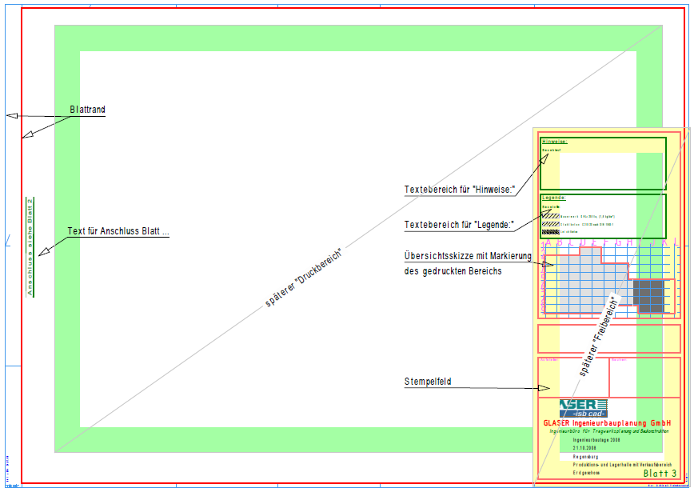

 Beispiel mit möglichen Zeichenelementen für einen Blattrahmen. Beachten Sie die Reihenfolge, in der die Planelemente gedruckt werden. |
Reihenfolge beim Drucken:
1.Der Druckbereich wird ausgegeben.
2.Der Freibereich überdeckt den Druckbereich.
3.Der Blattrahmen wird eingefügt.
Um einen Blattrahmen zu erstellen
§Erstellen Sie auf einem leeren Blatt mit der gewünschten Plotfläche [Konst3 | PlotFl] einen Blattrand [Konst3 | Blattr].
§Fügen Sie ein Schriftfeld und alle weiteren Elemente (Blattfahnen, Hinweistexte, Legenden usw.) mit der Funktion [Datei | Einfüg] ein.
-Dieser Bereich sollte ein Rechteck sein, das beim Einfügen dem Freibereich entspricht.
-Mit der kostenfreien Bibliothek Planköpfe nach EC2 können Sie vordefinierte Stempel, Schrift- und Hinweisfelder einfügen.
§Ändern Sie möglichst alle Texte so, dass auf der eigentlichen Zeichnung so wenig wie möglich geändert werden muss. Schreiben Sie Texte als Platzhalter (Makrotexte).
§Speichern Sie die Zeichnung unter einem möglichst selbsterklärenden Namen, z. B. Bauvorh. X – Ebene 0.1 – Blattrahmen_1. [Datei | Speich].
Der Blattrahmen kann als universelle Vorlage verwendet und in andere Zeichnungen eingefügt werden.
Um mehrere spezielle Blattrahmen zu erstellen
§Erstellen Sie, wie unter "Um einen Blattrahmen zu erstellen" beschrieben, für jeden Planschnitt einen extra Rahmen her.
Hier können Sie Bezeichnungen (Blatt 1, Blatt 2, Blatt 3, etc.) und Verweise auf die anschließenden Blattrahmen (Anschluss siehe Blatt 2, 3 oder 4) an den richtigen Stellen platzieren.
§Speichern Sie die Datei abschließend ab. [Datei | Speich].
Siehe auch:
·Blattrahmen ausgeben (Planschnitt)